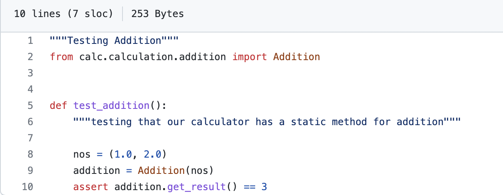

Unit testing is a software testing method by which individual units of source code are put under various tests to determine whether they are fit for use (Source). It determines and ascertains the quality of your code. Test Runner is a library or a testing tool which reads the source code that contains unit tests and a bunch of settings which can be executed and produces its output to the console or log files. There are different Test Runners available in Python. Pylint is the popular Test Runner used by beginners. Things can quickly spiral out of control for individuals who are just getting started with automated testing. It's like a bottomless hole of acronyms, abbreviations, and long, difficult words. The AAA pattern is a test structure pattern. The “Arrange-Act-Assert” (also AAA and 3A) pattern of testing was observed and named by Bill Wake in 2001.

Importance of AAA : It helps by unifying and clarifying the structure of tests which helps make the test
suite much more understandable and manageable.
It divides each test into three sections: Arrange, Act, and Assert, each of which is a step toward the
next. The Arrange phase puts up the input values for the test. The principal function being tested is
prompted by the act step. Finally, the assert step ensures that the function's output matches what was
expected. The pattern focuses each test on a single action. The advantage of this focus is that it clearly
separates the arrangement of the System Under Test (SUT) and the assertions that are made on it after the
action. To put it another way, each step in the pattern is a function whose return value is the next
step's input.
Eg: